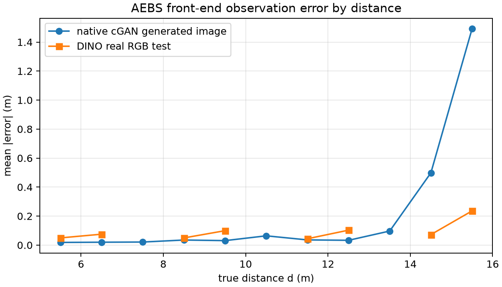
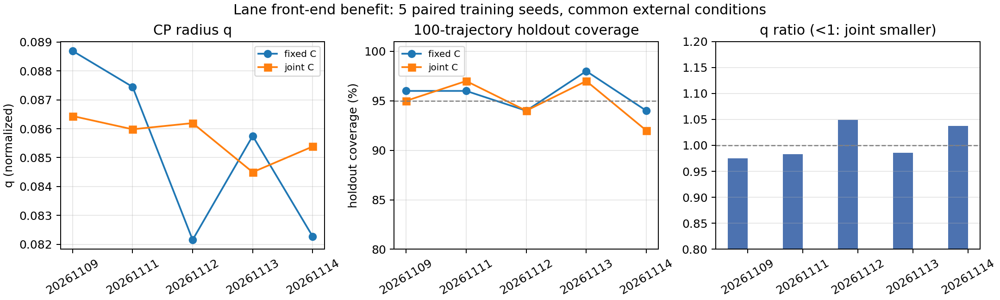

方法对比：前端、包络与证书
同一 test 的前端误差、历史灰度实现、CP/SBC 敏感性，以及四个实验的最终状态。
不同实验的任务、数据和证明域不同，不能用一个分数横比。本页把比较分成三层：同一 test 的前端误差、同一 actor/SBC 的包络敏感性、四个实验的最终状态。
1. AEBS 前端误差：同一 4,920 张 test 的正确版本
| 方法 | 训练/数据 | test MAE ↓ | RMSE | P95 abs | max abs | 静态 CP95 ↓ | test 覆盖 |
|---|---|---|---|---|---|---|---|
| cGAN + state_net | 旧 400 图生成库检查点 | 2.747 m | 3.320 m | 6.480 m | 8.342 m | 5.221 m | 87.64% |
| 32×32 灰度 DINO | 24k，历史运行 | 0.1017 m | 0.1842 m | 0.4670 m | 0.9651 m | 0.2656 m | 90.47% |
| 32×32 灰度 DINO | 24k，本轮重训可重载 | 0.1079 m | 0.2010 m | 0.5514 m | 1.1607 m | 0.2797 m | 90.75% |
| 真实 RGB DINO | 24k，当前 | 0.0874 m | 0.1211 m | 0.2614 m | 0.5250 m | 0.2307 m | 93.33% |
同一 0.25 m bin 划分，train/val/test=14,172/4,908/4,920。RGB 相对灰度历史 MAE 低约 16.4%，相对灰度重训低约 19.0%；这是单次运行描述，不是多种子显著性。rain 分组灰度 MAE 约 0.0725 m，RGB 约 0.0967 m，RGB 并非所有天气都更好。
1.1 原 SPVC cGAN 原生闭环 vs DINO
| 项目 | 原生 cGAN | 原生 cGAN + 新 actor | 新 DINO |
|---|---|---|---|
| 轨迹 q | 1.9156 m | 1.9156 m | 0.4184 m |
| 留出覆盖 | 92/100 | 92/100 | 99/100 |
| 留出行为 | 100/100 成功 | 100/100 成功 | 4800/4800 成功 |
| 静态误差 | MAE 0.2219 m / max 1.9839 m（生成图） | 同左 | MAE 0.0874 m / max 0.5250 m（真实图） |
5.221 m 不是原生 cGAN 的 q，那是旧 state_net 迁移到 24k 真实灰度图的跨库结果。原生 cGAN q=1.9156 m。两边行为都成功，收益在误差包络/覆盖，不在任务成功率。
| 总包量 | cGAN real MAE / q / 覆盖 | DINO real MAE / q / 覆盖 |
|---|---|---|
| 400（新严格 split） | 0.694 / 4.169 / 71/72 | 0.298 / 0.865 / 69/72 |
| 10k | 0.0085 / 0.0209 / 1894/2000 | 0.0205 / 0.0557 / 1893/2000 |
| 24k | 0.0247 / 0.0307 / 4382/4920 | 0.0874 / 0.2307 / 4592/4920 |
cGAN realhead 是在真实 32×32 灰度图上训练的 state_net；不是 generated-trained 迁移。每档内部共用 test；三档 test 不同，不能画 scaling。400 DINO 胜；10k/24k cGAN MAE/q 胜；24k cGAN 覆盖 89.1% 低于 DINO 93.3%；没有单向赢家。400 对 split/检查点敏感，不能单 pair 定架构。

2. 原来的 10/29 灰度实现：单独的历史基线
| 项目 | 原 10/29 灰度包 |
|---|---|
| 数据 | 400 张 32×32 灰度图；240 / 80 / 80 |
| 观测 | 冻结 DINOv2 ViT-S/14 CLS 384 → 128 → 128 → 1；最佳 epoch 243 |
| test 误差 | MAE 0.129266 m；RMSE 0.165444 m；max 0.414889 m（80 test） |
| CP | 状态相关 Bernstein b0(d)；q=2.522199；均值半径约 0.4316 m；40 条校准 |
| SBC | 非负 [2,16,8,1]；初始 0；危险下界 24.965932 |
| 连续域 / 回放 | 4,971,398 / 105,608 区间；均 0 反例、0 未解决 |
| 行为 | 名义 / 全图 / 留出各 1441/1441；32 项测试 |
这个包不能和 24k test 横比，也不能把它的 24.9659 危险下界套到当前 RGB 包。它作为“早期灰度链路能闭合”的历史证据保留。 原灰度包
3. AEBS 包络与 SBC：固定 actor 的敏感性
| 误差集合 | 半径 / 统计 | 同一旧 SBC | 结论 |
|---|---|---|---|
| RGB 静态 | 0.230725 m | 212 见证；150,033 未解决 | 不通过 |
| 灰度历史静态 | 0.265584 m | 202 见证；128,858 未解决 | 不通过 |
| 灰度重训静态 | 0.279712 m | 179 见证；141,107 未解决 | 不通过 |
| cGAN 旧检查点 | 5.221404 m | 624 见证；59,278 未解决 | 不通过 |
| RGB 轨迹 CP + 新 SBC v2 | 0.418359 m | 292,024 区间；0/0；深度 29 | 通过 |
| RGB 状态相关 CP（C 固定） | 均值 0.3217 / max 0.7189 m | 41,070 区间；0/0；深度 11 | 通过；留出 92/100；不替换常量 |
旧 SBC 对四种误差集合都失败；新 SBC v2 是针对 RGB 轨迹半径重训的，不能反过来说灰度/cGAN 也已通过。状态相关只学 b(d)，C 仍是 [1,0]，不是联合学习新前端。
4. 车道：常量盒与状态相关 v2
| 项目 | 常量盒（主结果） | 状态相关 v2（修复对照） |
|---|---|---|
| 拟合 / 校准 | — | 99 / 100 条，索引不重叠 |
| 阈值 | 0.090093，190/199 | q=1.7205338，第 96/100 秩；无 cap |
| 校准覆盖 | 190/199 | 96/100 |
| 旧留出回归 | 95/100 | 93/100（旧数据回归，不是新盲测） |
| 平均 / 观测最大半径 | 0.090093 / 0.090093 | 0.0883927 / 0.1093692 |
| SBC | 原审计 0/0 | 13,000 区间；三曲率 0/0 |
| 同一 100 条校准常量对照 | — | 0.0886653；旧留出 94/100 |
v2 已修复 v1 的留出残差误用、同批拟合+校准和 cap 问题；但它是旧数据回归，且没有明显优于常量盒。v1 仍为 withdrawn/unverified。
5. 联合学习视觉投影与 C（11/09 独立版）
| 实验 | 训练 | 新 CP | SBC / 当前状态 |
|---|---|---|---|
| 车道联合 C | 5 对训练种子；每对固定/联合 C 同预算、同初始化 | q 均值：固定 0.085263，联合 0.085699；留出覆盖 95.6% vs 95.0% | 两边各 5/5 通过数值 SBC；3/5 对联合 q 更小；无稳定优势。[阶段结果](../docs/current/SPVC前端替换_收益证明_阶段一至二结果_20261110.md) |
| RGB AEBS 联合 C | C≈[1.0,−8.44×10⁻⁶]；速度项接近零 | q=0.394521 m；校准 190/199；留出 91/100；299 条成功 | 102,338 区间，0/0，数值 SBC 通过；但留出未达 95/100 |
| 灰度 AEBS 联合 C v2 | C≈[0.999998,0.0019307]；视觉尺度 3.237806 m | q=3.515916 m；校准 190/199；留出 95/100；299 条成功 | 未通过：4,096 个深度 0 区间中 78 个见证、74 个未解决 |
联合版把视觉投影和 C 一起训练，但使用独立 CP/SBC；不继承固定 C 版任何证书。车道已完成 5 对训练种子配对：q 均值固定 0.085263 / 联合 0.085699，留出覆盖 95.6% / 95.0%，两边各 5/5 通过 SBC；联合 C 没有稳定优势。RGB 联合版“SBC 通过”不等于“留出覆盖 95%”；灰度联合版已经失败。详见 阶段结果。

6. 四个实验放在一起看
| 实验 | 任务 / 观测 | CP / 误差集合 | SBC / 验证 | 行为 | 当前状态 |
|---|---|---|---|---|---|
| AEBS RGB | 2D 状态；1D 距离；24k 真实 RGB | 轨迹 0.418359 m | 292,024 区间；0/0 | 4,800/4,800 | 条件证书；C 固定 |
| AEBS 10/29 灰度 | 2D；400 张 32×32；DINO | 状态相关；4,971,398 区间 | 0/0；105,608 回放 0/0 | 1441/1441 | 历史小数据包；非当前同测 |
| 车道 | 2D (e,θ)；3,600 渲染 | 0.090093 轨迹 CP | 0 见证/0 未解决 | 12/12 图像闭环 | 证书通过；三个曲率 |
| 停车场 | 4D / 3D；15 起点 | 启动 CP；233/240 审计 | 增广可达域神经 SBC | 30/30 | 受保护闭环；必须在线后备 |
| 移动机器人 | 3D / 3D；2,400 图 | 约 (0.0488,0.0488,0.3254) | SBC 未通过；7,360 未解决 | 24/24 | 任务跑通；完整证书失败 |
7. 不能从这张页推出的结论
- 不能把 cGAN 旧检查点当作同预算架构对比；它只说明迁移参考。
- 不能把 32×32 灰度 vs 640×640 RGB 的差异全归因于颜色；源分辨率和预处理同时变了。
- 不能把静态 CP 0.2307 m 和轨迹 CP 0.418359 m 混成一个“前端 CP”。
- 不能把原 10/29 灰度包的 24.9659 或 1441/1441 直接套到当前 24k RGB 包。
- 不能把“新 SBC 在 RGB 轨迹半径通过”推成灰度/cGAN 也通过；需要各自重训/验证。
- 不能把状态相关 CP 的平均半径更小写成覆盖更好；AEBS 92/100、车道 93/100 都低于常量对照。
- 不能把联合 C 版和固定 C 版混用；联合 C 版有自己的 CP/SBC。车道 5 对配对已完成，但联合 C 没有稳定优势。
完整证据：AEBS 前端对比文档 · 基线与 JSON · 原灰度包